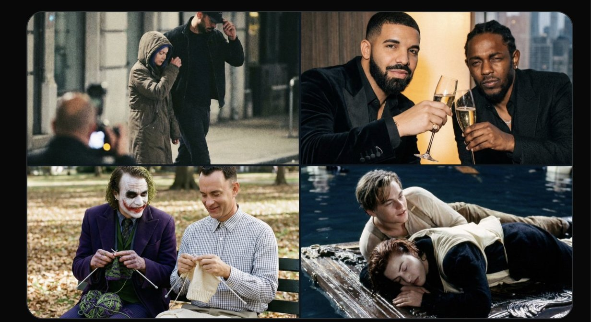

Nano Banana Pro 精准图像提示指南
以专业编辑部式编排整理原始公开内容，强调查阅效率、结构完整度与反复回看时的定位速度。
0 简介
Nano Banana Pro 是目前业界公认最强大的 AI 图像生成模型之一。然而，根据多位资深用户的实际测试反馈，绝大多数使用者仅发挥了该模型约 1% 的图像生成能力。
这一现象的根本原因并非模型本身的能力限制，而是大多数用户在编写提示词（Prompt）时缺乏系统性的组织和表达策略。
本指南系统性地总结了 20 条核心提示技巧，帮助用户将 Nano Banana Pro 的图像生成质量提升至接近专业摄影师和数字艺术家的水准。
nano banana Pro 是目前最强大的图像模型，但几乎每个人都只用到了它 1% 的能力。以下是可以帮你精准生成任何图像的完整提示指南。
# 技巧一览表
| 编号 | 技巧名称 | 核心功能 |
|---|---|---|
| 1 | 细节桶系统 | 结构化分组细节描述 |
| 2 | 相机脑力黑客 | 电影级相机指令 |
| 3 | 微细节超写实 | 1-3词触发精确模式 |
| 5 | 风格锚点 | 精准控制艺术风格 |
| 6 | 要避免技巧 | 负面提示提升质量 |
| 8 | 精确修饰词 | 控制指令遵循程度 |
| 9 | 引用融合 | 混合多种视觉风格 |
| 10 | 分层提示 | 分层结构化输出 |
| 11 | 情感线索 | 添加情感氛围描述 |
| 12 | 物理规律 | 遵循物理规则增强写实 |
| 13 | 单一对象规则 | 聚焦单一主体更清晰 |
| 14 | 纹理词典 | 纹理改变整体氛围 |
| 15 | 隐形动词 | 引导模型而不凌乱 |
| 16 | 色彩心理 | 颜色背后的情感原因 |
| 17 | 灵感来自 | 复制任何艺术家风格 |
| 18 | 短长提示格式 | 两种格式适用不同场景 |
| 19 | 种子一致性 | 强制保持连续性 |
| 20 | 要避免的错误 | 不要在一句话中塞50个细节 |
注：本页忠实保留来源编号，故目录和表格不会伪造缺失的 4 与 7。
# 数据统计
| 指标 | 数值 | 说明 |
|---|---|---|
| 观看次数 | 180,236 次 | 总浏览量 |
| 书签保存 | 2,447 次 | 深度阅读用户 |
| 点赞数量 | 1,485 次 | 社区认可度 |
| 转帖分享 | 177 次 | 二次传播量 |
| 回复讨论 | 11 条 | 用户互动 |
01 技巧一：使用"细节桶"系统
将细节分门别类，装入不同的"桶"
初学者最常犯的错误是将所有细节信息堆砌在一起，没有进行逻辑分组。这会导致模型在解析提示词时产生歧义，输出的图像元素之间缺乏协调性。
解决方案：引入"细节桶"（Detail Bucket）系统，将提示词中的各种描述性元素归类到以下七个核心维度中。
七大细节桶

02 技巧二：使用"相机脑力黑客"
像专业电影摄影师一样指定相机参数
Nano Banana Pro 对相机相关的专业术语极为敏感。当你在提示词中精确指定相机参数时，模型会调动其训练数据中对应风格的视觉特征，生成具有强烈电影感的图像。
关键在于：不要使用模糊的描述，而要使用电影工业中的专业术语。
电影级相机指令
03 技巧三：添加微细节实现超写实
1-3个词触发超精确模式
当你需要生成照片级真实感的图像时，仅仅依赖光线、颜色等宏观描述往往不够。这些微细节的关键词通常只有 1-3 个词，却能将模型的渲染精度推升至一个新的层次。
它们通过触发模型训练数据中"真实物理世界"的高维特征向量，让生成结果具有照片级的可信度。
超写实微细节关键词
05 技巧五：使用"风格锚点"控制氛围
选择 1-2 个风格锚点，不要超过 10 个
风格锚点是 Nano Banana Pro 另一个强大的控制维度。通过引用已知的艺术风格、流派或艺术家特征，你可以精准地指定图像的整体艺术方向。
核心原则：少即是多。选择 1-2 个你最希望突出的风格，不要贪多。过多的风格锚点会导致模型在多种风格之间产生冲突。
推荐风格类型
06 技巧六：使用"要避免"技巧
负面提示能给你清晰的结果
很多人不知道：nano香蕉非常注意负面提示。通过明确告诉模型"不要什么"，可以有效地引导模型避开常见的错误生成结果。
负面提示示例
08 技巧八：使用"精确修饰词"
添加精确修饰词来控制指令遵循程度
有时候模型会"过度发挥"，添加一些你没有要求但觉得"还不错"的元素。精确修饰词可以帮助你控制模型遵循指令的严格程度。
精确修饰词列表
09 技巧九：使用"引用融合"方法
混合两种视觉或氛围
Nano Banana Pro 非常擅长融合不同的视觉风格。通过明确的融合指令，你可以创造出独特的视觉效果。
融合方法
10 技巧十：分层提示，非段落
这是最重要的规则 — 像构建大纲一样组织提示词
分层提示能持续输出完美结果。不要用自然段落，而是用明确分层的结构来组织你的提示词。
分层结构模板
创意：[描述核心创意/主题]
细节：[光线、氛围、环境等细节描述]
相机：[相机参数和拍摄指令]
风格：[风格锚点选择]
颜色：[色彩偏好描述]
负面：[需要避免的元素]
11 技巧十一：使用情感线索
nano香蕉对情感氛围很敏感
是的，情感线索很重要。 Nano Banana Pro 能够捕捉和表达细腻的情感氛围，为图像注入更深层的叙事性。
情感线索示例
12 技巧十二：赋予nano香蕉"物理规律"
遵循物理规则，瞬间解锁写实感
Nano Banana Pro 喜欢物理规则。当你在提示词中包含符合物理规律的描述时，模型能够更好地理解和渲染真实世界的互动关系。
物理规律示例
13 技巧十三："单一对象"规则保持清晰
聚焦单一主体，nano香蕉更喜欢清晰层次
如果想要清晰结果，明确指定单一主体比罗列多个对象效果更好。模型在处理单一明确的主体时能够更精细地渲染细节。
清晰聚焦表达方式
14 技巧十四：使用"纹理词典"黑客
纹理可以改变整体氛围
纹理是提升图像质感的有力工具。不同的纹理材质可以立即改变图像的整体氛围和情感调性。
纹理词典
15 技巧十五：秘诀："隐形动词"
这些动词引导模型不会让提示凌乱
使用隐形动词可以引导模型的生成方向，同时保持提示词的简洁和优雅。这些动词具有描述性但不增加额外的视觉元素负担。
隐形动词列表
16 技巧十六："色彩心理"黑客
告诉它颜色背后的情感原因
Nano Banana Pro 对色彩心理极其敏感。告诉模型颜色背后的情感原因，而不仅仅是指定颜色代码，可以让图像的情感表达更加自然和有力。
色彩心理表达示例
17 技巧十七：用"灵感来自"技巧复制任何艺术家
安全地引用艺术家风格的正确方式
通过"灵感来自"的说法，你可以在不侵犯版权的情况下借鉴著名艺术家的风格特征。
安全引用方式
18 技巧十八：使用2种格式 — 短提示 vs 长提示
短提示用于探索，长提示用于精确结果
根据使用场景选择合适的提示长度。短提示适合创意探索，长提示适合客户级精确结果。
'赛博朋克女孩在霓虹雨中行走，电影画面'
创意：[描述核心创意]
相机：[相机参数]
光线：[光线描述]
纹理：[纹理描述]
背景：[背景描述]
细节：[微细节关键词]
负面：[需要避免的元素]
19 技巧十九：用"种子一致性"短语强制一致性
保持角色和场景连续性的技巧
当需要生成系列图像（如漫画、连续镜头、游戏资源等）时，一致性至关重要。通过明确的连续性指令，nano香蕉能够很好地处理角色和外观的连续性。
种子一致性表达
20 技巧二十：要避免的最大错误
不要在一句话中塞50个细节 — 拆分、分层、简化
这是最常见也最致命的错误：在一个句子中塞入过多的细节描述。这会让模型无法区分重点，输出变得混乱。
正确做法 vs 错误做法
'一个漂亮的女孩站在霓虹灯下，穿着红色外套，金色头发，蓝色眼睛，脸上有微笑，背后是赛博朋克城市，有下雨效果，湿润的地面反射灯光...'
创意：赛博朋克风格女孩肖像
光线：霓虹边缘光
氛围：孤独神秘
纹理：湿玻璃反射
负面：无卡通感，无过饱和
★ 最终作弊码
- 像说话一样写
- 聚焦清晰而非诗意
- 使用分层结构
- 使用桶式组织
- 控制光线和相机
- 限制风格锚点
- 使用负面提示
- 使用微细节
- 营造氛围
- 简化一切
ⓘ 来源与参考
| 项目 | 内容 |
|---|---|
| 原始发布 | X (Twitter) @ChrisSlacker |
| 发布时间 | 2026年4月14日 上午10:02 |
| 账号性质 | 认证账号（科技圈资深创作者） |
| 整理用途 | 仅供学习交流，版权归属原作者 |